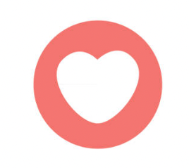

What Hera Loves
I like to watch movies. My favorite movie is 'La La Land', I've watched it more than seven times. On the other hand, I can't watch horror movies or thriller movies because I'm scared easily.
I have one-year-old dog, and his name is Zeze. He is the cutest white Pomeranian in the world! 🤍 Zeze is very smart and gentle, and he makes me very happy from the day I started to raise him. :) He's the reason I live and he's like my precious child. ❤︎
I love Ramen, especially Japanese Ramen. I could probably live with only this food for the rest of my life. The Ramen in the picture is the Signature menu of the 'Oreno Ramen', which located near my house.
I love cute, fluffy dolls. The Park Hyatt Seoul hotel, where I've worked for 5 years, releases a special limited edition teddy bear every year, and I have all kinds of those teddy bears. 🧸 They're still on my bedside. :)
My favorite color is warm-beige. This color always makes me feel comfortable and relax. My room is decorated with warm beige, white and pastel tones. This web page has also been turned into a warm beige. XD

Kazuha, a member of the K-pop girl group Le Sserafim, is so cute and her smile is very beautiful. She's my favorite idol star. She used to major in ballet, 🩰 and her dance performance is absolutely gorgeous!